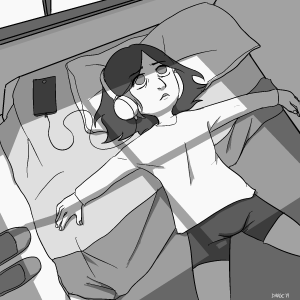
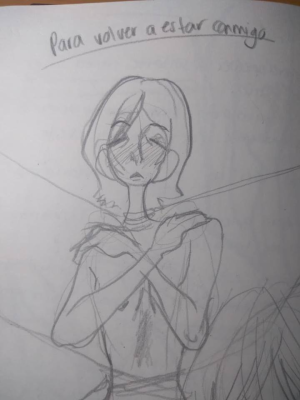
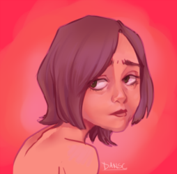
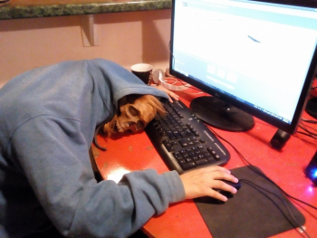

| Fecha | titulo | tags |
|---|---|---|
| Abr 5, 2020 | A falta de propósito escribiré deliberadamente | #personal #poesia |
| Jul 26, 2018 | La carta que no mandé + Para volver a estar conmigo. | #personal #poesia |
| May 10, 2018 | Hacia dentro. | #personal #poesia |
| Abr 22, 2018 | El por qué | #personal |
Música para escuchar mientras lees mi blog
A falta de propósito escribiré deliberadamente
April 05, 2020
A falta de propósito escribiré deliberadamente.
A falta de emoción contemplaré del mismo modo el cielo
A falta de amor buscaré el apoyo inexistente de mi pasado
A falta de sueños trataré la vida como si fuera infinita
A falta de amigos me recostaré junto a mi mente y le hablaré del fin.
Porque todo lo que faltaba está presente, y lo que tenía en manos ya se esfumó.
¿No está el mundo lleno de espacios vacíos?
Creo que soy uno de ellos.
A falta de certeza terminaré esta oración.
Diciembre 2014

Ya tiene mucho tiempo que escribí este texto, sin embargo siempre vuelve a mi esa sensación, ese pensar y sentir, es algo que cada cierto tiempo renueva su vigencia y vuelvo a entrar en un estado de entumecimiento emocional. Se siente como estar viviendo a medias, como si algo faltara. Por otro lado no es un existir que cause dolor o pena, realmente solo es estar por estar...
De cualquier manera puede que solo sea una consecuencia más del encierro.
La carta que no mandé + Para volver a estar conmigo.
July 26, 2018
Nota: Estos son dos textos que en algún momento temí publicar, significaron mucho para mi, en ellos deposité muchas emociones. Ya pasó tiempo y, si bien sigo recuperándome de ello, creo que es sano dejarlo ir.
Por otro lado, quería comentar que todos los textos que publico, no están pensados para ser "artísticos", son en realidad para mi una clase de diario y una forma de terapia que decido compartir.
Me acostumbraste. Tú lo dijiste.
Como si fuera un colgante de tu cuello, de esos que no te quitas, que sólo se enredan más en ti. Me tomaste de mi punto más débil, de mi auto-instalada cadena. Fuiste cruel, vil, egoista.
Fuiste cruel de maneras que no pensaste y que hasta ahora no has entendido, que quizá no llegues a entender. Pues sólo en mi complejidad logré verlas y abrazarlas, odiarlas, y odiarte. Quererte.
Tal vez te estoy dando más crédito del que mereces, pues en este río, agujero de emociones, de rechazos y decepciones, parezco ser la única nadando. Tú sigues en la orilla, preguntándote por qué me lancé tan profundo. Y yo, desde mi profundidad me pregunto por qué demonios esperaba que te lanzaras también, por mi.
Y no lo hiciste, y no lo haces, sólo observas. Y me molesto y me entristezco; no es tu culpa, es la mía. Por esperar algo que no sabes dar, o no entiendes cómo, ni puedes ver para qué.
Me alegra y me atormenta tu presencia, tu sonrisa y tus silencios que me veo obligada a romper; más que alegrarme, me dan paz. Una paz que ya no encuentro sola y que me obliga a volver a ti.
Me alegran tus logros, que veo casi como míos, pues yo te moldeo y tú te pones en mis manos. Sin dudar, sin gritar, como un niño que no cuestiona; y yo, como el lobo, viendo como ganarme la satisfacción de hacerme de ti,
Me alegra que me haces sentir completa.
Me asusta no estarlo sin ti.
------
Para volver a estar comigo
Si pudiera aprender a soltarte, cariño, sabes que lo haría.
Para no hacerlo más largo, para no volvernos unos enfermos,
por ti, por mi. Ve.
Es más fácil así, es más solitario aquí.
Si pudiera aprender a estar sin ti, cariño, sabes que lo haría.
Para dejar esa melancolía, para volver a ser nada,
para volver a ser yo
Pero yo no soy yo, y tú no eres más que otro.
Aprendí en cambio a ser para ti, a ser para todos.
Aprendí a hacerlo difícil, imposible casi.
¿Cuándo te vas? Para yo poder volver.
Para volver a estar sin ti, sin nadie.
Para volver a estar conmigo.

Hacia dentro.
May 10, 2018
Tantas capas, tantos personajes y tantas mentiras. Todas se disuelven cuando veo hacia dentro.
Aunque sea apenas de reojo, aunque sea un solo pensamiento, una sola sensación, lo peor es ver el interior, toparme frente a frente con el espejo, donde ni siquiera a mi me veo.
No hay nada.
No están mis ojos ni mis manos, no están las palabras que hablo, no está el color del que me pinto, ni los nombres que le doy a mis días. No está mi vida, no está la infancia ni la familia.
No hay sangre ni lágrimas.
No sé qué hay, pero creo en el hecho de que estoy ahí, es el hilo que me mantiene.
Y no siento nada, no quiero reír, ni llorar; no quiero moverme ni respirar.
Es el vacío lo que hay hacia dentro.
Mis manos se desplazan,
Y mis nervios se disipan
Me consumo.
Y ya no queda nada,
Nada de mi cuerpo
Pero todo de mi ser.
El por qué
Abr 22,2018
Si bien las palabras no son mi fuerte, son algo que he guardado desde hace mucho. Mis palabras son torpes, mal acomodadas, poco prudentes. Y no es mi habilidad para escribir lo que las hace ser tan "fuera de lugar", si no mi poca capacidad para expresar lo que hay dentro.
Soy una persona hermética que quiere conectar consigo misma.
Quiero intentar encontrarme aquí.

No hay un por qué.
Lo que si hay es una fuente de palabras que nunca quisieron salir.
Hasta hoy.

(Yep. That's me.)